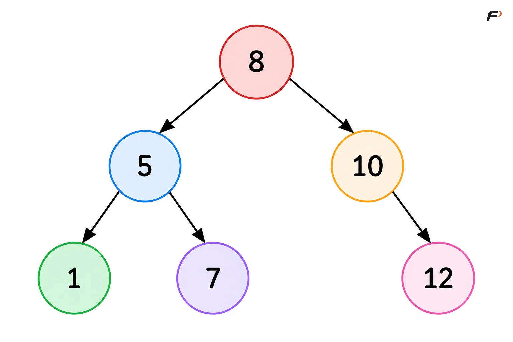
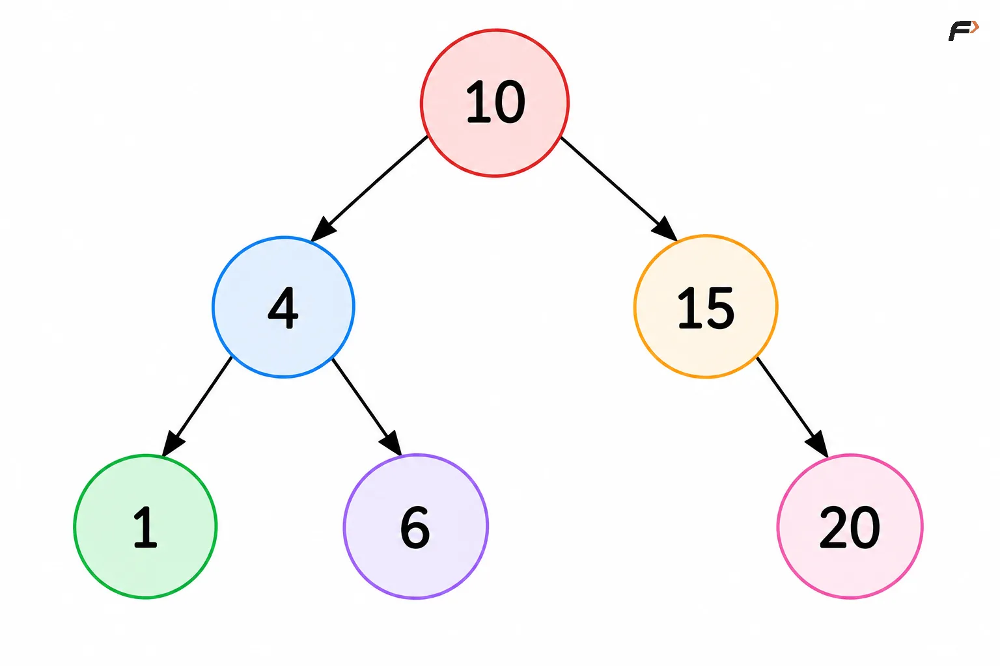
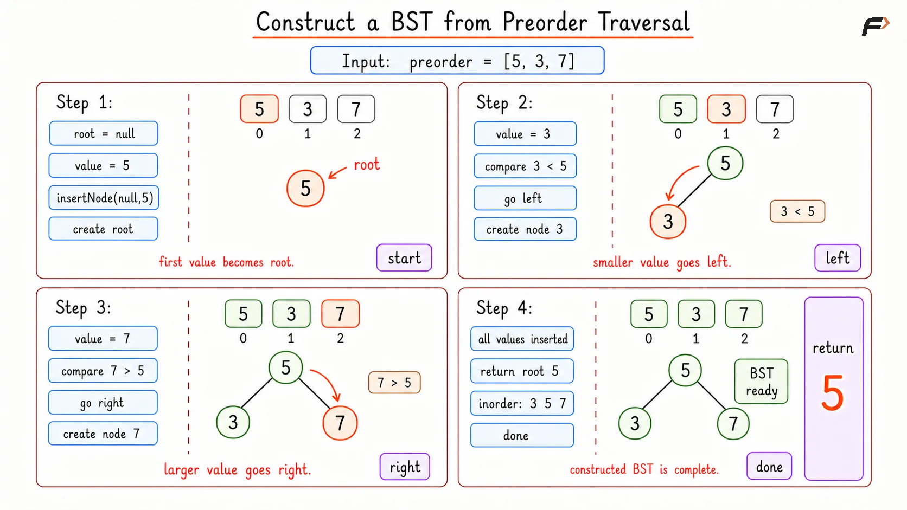
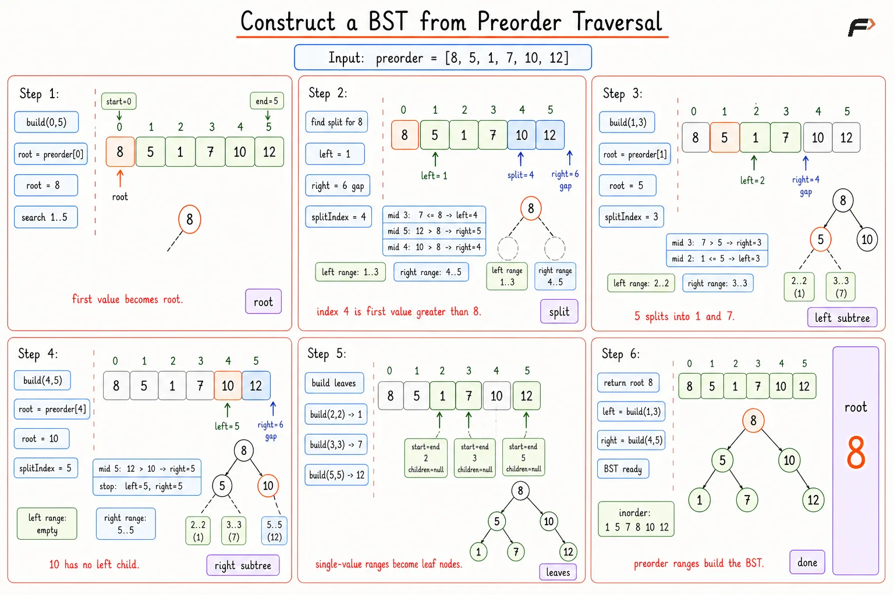
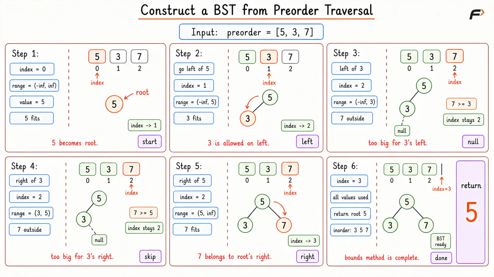

Construct a BST from Preorder Traversal
Given an array preorder that represents the preorder traversal of a Binary Search Tree, construct the BST and return its root. In preorder traversal, nodes are visited in this order:
Root
Left subtree
Right subtree
In a BST, every value in the left subtree is smaller than the root, and every value in the right subtree is greater than the root.
Example 1
Input: array = [8, 5, 1, 7, 10, 12]
Output: tree generated

Explanation: In preorder (Root ->Left ->Right), the first value 8 is the tree root.
BST rules state all smaller values go left and all larger values go right, splitting the rest into left subtree [5, 1, 7] and right subtree [10, 12].
Applying the same logic recursively:
For [5, 1, 7]: 5 is the root, 1 is smaller (left child), and 7 is larger (right child).
For [10, 12]: 10 is the root, there are no smaller values (no left child), and 12 is larger (right child).
Example 2
Input: array = [10, 4, 1, 6, 15, 20]
Output: tree generated

Explanation: In preorder (Root -> Left -> Right), the first value 10 is the tree root.
BST rules state all smaller values go left and all larger values go right, splitting the rest into left subtree [4, 1, 6] and right subtree [15, 20]. Applying the same logic recursively: For [4, 1, 6]: 4 is the root, 1 is smaller (left child), and 6 is larger (right child). For [15, 20]: 15 is the root, there are no smaller values (no left child), and 20 is larger (right child).
Brute Force Approach
The most direct idea is to rebuild the BST in the same order in which preorder gives the values.
Preorder visits a node before its children, so the first value is the root. After that, every next value can simply be inserted into the BST using the normal BST insertion rule.
If the value is smaller than the current node, move left. If it is greater, move right. Eventually an empty position is found, and the value is placed there.
This works because inserting values one by one into an empty BST using the given preorder order creates the same BST. The only drawback is that the tree can become skewed, and insertion may take linear time for many nodes.
Algorithm
Start with an empty root because no node has been created yet.
Traverse every value in
preorderfrom left to right. This is done because preorder already gives the root before its subtree nodes.Insert each value into the BST using the normal BST rule. If the value is smaller, it must go somewhere in the left subtree; if it is greater, it must go somewhere in the right subtree.
When an empty position is reached, create a new node there because that is the correct place for the current value.
After all values are inserted, return the root of the constructed BST.
Dry Run

Construct BST from Preorder Traversal Brute Dry Run
Solution
#include <bits/stdc++.h>
using namespace std;
struct TreeNode {
int val;
TreeNode* left;
TreeNode* right;
TreeNode(int value) {
val = value;
left = nullptr;
right = nullptr;
}
};
class Solution {
private:
// Inserts one value into the BST and returns the subtree root.
TreeNode* insertNode(TreeNode* root, int value) {
// An empty position is the correct place for the new value.
if (root == nullptr) {
return new TreeNode(value);
}
// Smaller values must be placed somewhere in the left subtree.
if (value < root->val) {
root->left = insertNode(root->left, value);
}
// Greater values must be placed somewhere in the right subtree.
else if (value > root->val) {
root->right = insertNode(root->right, value);
}
return root;
}
// Prints inorder traversal of the constructed BST.
void printInorder(TreeNode* root) {
// Empty subtree has nothing to print.
if (root == nullptr) {
return;
}
printInorder(root->left);
cout << root->val << " ";
printInorder(root->right);
}
public:
/*
Builds a BST by inserting preorder values
one by one using the normal BST rule.
*/
TreeNode* bstFromPreorder(vector<int>& preorder) {
// Stores the root of the BST built so far.
TreeNode* root = nullptr;
for (int value : preorder) {
root = insertNode(root, value);
}
return root;
}
// Prints inorder traversal of the constructed BST.
void printTree(TreeNode* root) {
printInorder(root);
}
};
// Driver code starts
int main() {
vector<int> preorder = {8, 5, 1, 7, 10, 12};
Solution obj;
TreeNode* root = obj.bstFromPreorder(preorder);
obj.printTree(root);
return 0;
}Complexity Analysis
Time Complexity: O(N2), N is the number of nodes in tree, in the worst case because the BST can become skewed, and each insertion may take O(N) time.
Space Complexity: O(H), where H is the height of the BST due to recursive insertion calls. In the worst case, it can be O(N).
Better Approach
In preorder traversal, the first value of any subtree is its root.
Now apply the BST property. In the preorder segment for a subtree, all values smaller than the root belong to the left subtree. Once a value greater than the root appears, the right subtree starts.
For example, in [8, 5, 1, 7, 10, 12], root is 8. Values 5, 1, 7 are smaller than 8, so they belong to the left subtree. The first greater value is 10, so the right subtree starts there.
This gives a clean recursive split.
The small improvement is to find this split point using binary search. The whole segment is not sorted, but the condition value > root changes only once: first all left-subtree values are smaller than root, then all right-subtree values are greater than root.
So binary search can find the first value greater than the root.
Algorithm
Treat the current preorder range as one subtree. This is useful because preorder keeps each subtree's nodes together.
The first value of the range becomes the root because preorder always visits root first.
Use binary search to find the first value greater than the root. This split point is needed because smaller values form the left subtree and greater values form the right subtree.
Recursively build the left subtree from the values before the split point.
Recursively build the right subtree from the values from the split point onward.
Return the root after connecting both subtrees.
Dry Run

Construct BST from Preorder Traversal Better Dry Run
Solution
#include <bits/stdc++.h>
using namespace std;
struct TreeNode {
int val;
TreeNode* left;
TreeNode* right;
TreeNode(int value) {
val = value;
left = nullptr;
right = nullptr;
}
};
class Solution {
private:
// Builds the BST from preorder values inside one range.
TreeNode* build(vector<int>& preorder, int start, int end) {
// No values are left in this range, so no subtree exists.
if (start > end) {
return nullptr;
}
// The first value of this range is the subtree root.
TreeNode* root = new TreeNode(preorder[start]);
// Defines the search space for the first greater value.
int left = start + 1;
int right = end + 1;
while (left < right) {
int mid = left + (right - left) / 2;
// A greater middle value may be the first right-subtree value.
if (preorder[mid] > root->val) {
right = mid;
}
// A smaller middle value still belongs to the left subtree.
else {
left = mid + 1;
}
}
// Marks where the right subtree begins.
int splitIndex = left;
root->left = build(preorder, start + 1, splitIndex - 1);
root->right = build(preorder, splitIndex, end);
return root;
}
// Prints inorder traversal of the constructed BST.
void printInorder(TreeNode* root) {
// Empty subtree has nothing to print.
if (root == nullptr) {
return;
}
printInorder(root->left);
cout << root->val << " ";
printInorder(root->right);
}
public:
/*
Builds a BST by using binary search
to split each preorder range.
*/
TreeNode* bstFromPreorder(vector<int>& preorder) {
return build(preorder, 0, (int)preorder.size() - 1);
}
// Prints inorder traversal of the constructed BST.
void printTree(TreeNode* root) {
printInorder(root);
}
};
// Driver code starts
int main() {
vector<int> preorder = {8, 5, 1, 7, 10, 12};
Solution obj;
TreeNode* root = obj.bstFromPreorder(preorder);
obj.printTree(root);
return 0;
}Complexity Analysis
Time Complexity: O(N log N), N is the number of nodes in tree, in the worst case because each node is created once, and each recursive call uses binary search to find the split point.
Space Complexity: O(H), where H is the height of the constructed BST. In the worst case, it can be O(N).
Optimal Approach
The previous approach keeps scanning to find where the left subtree ends. A better thought is: why search for the split again and again when the valid range of each subtree already tells the story?
For any node in a BST:
Its left subtree can only contain values smaller than that node.
Its right subtree can only contain values greater than that node.
So while reading preorder from left to right, keep a valid range for the current subtree. If the next value fits in that range, it belongs here. If it does not fit, that subtree is finished, and the value should be used by some ancestor's right subtree.
The index moves forward only when a node is actually created. That is the key reason this approach becomes linear.
Algorithm
Keep one index that points to the next unused value in
preorder. This avoids slicing arrays or rechecking old values.Start with the widest possible range, because the root can be any valid value.
For each recursive call, check whether the next preorder value fits inside the allowed range. This check is needed because each subtree can only accept values allowed by its ancestors.
If the value does not fit, return
nullwithout moving the index. This is important because the value may belong to another subtree that will be built later.If the value fits, create a node and move the index forward because this value has now been consumed.
Build the left subtree with an upper bound equal to the current node's value, then build the right subtree with a lower bound equal to the current node's value.
Return the node after both subtrees are connected.
Dry Run

Construct BST from Preorder Traversal Optimal Dry Run
Solution
#include <bits/stdc++.h>
using namespace std;
struct TreeNode {
int val;
TreeNode* left;
TreeNode* right;
TreeNode(int value) {
val = value;
left = nullptr;
right = nullptr;
}
};
class Solution {
private:
// Builds the subtree whose values must stay inside the given bounds.
TreeNode* build(vector<int>& preorder, int& index, long long lower, long long upper) {
// All preorder values are already used, so there is no subtree left.
if (index >= (int)preorder.size()) {
return nullptr;
}
// Stores the next value that has not been used yet.
int value = preorder[index];
// A value outside the range belongs to another subtree.
if (value <= lower || value >= upper) {
return nullptr;
}
// The value fits this range, so it becomes the current root.
TreeNode* root = new TreeNode(value);
// Move forward because this value is now used.
index++;
root->left = build(preorder, index, lower, value);
root->right = build(preorder, index, value, upper);
return root;
}
// Prints inorder traversal of the constructed BST.
void printInorder(TreeNode* root) {
// Empty subtree has nothing to print.
if (root == nullptr) {
return;
}
printInorder(root->left);
cout << root->val << " ";
printInorder(root->right);
}
public:
/*
Builds a BST by consuming preorder values
only when they fit the current valid range.
*/
TreeNode* bstFromPreorder(vector<int>& preorder) {
// Points to the next preorder value that still needs placement.
int index = 0;
return build(preorder, index, LLONG_MIN, LLONG_MAX);
}
// Prints inorder traversal of the constructed BST.
void printTree(TreeNode* root) {
printInorder(root);
}
};
// Driver code starts
int main() {
vector<int> preorder = {8, 5, 1, 7, 10, 12};
Solution obj;
TreeNode* root = obj.bstFromPreorder(preorder);
obj.printTree(root);
return 0;
}Complexity Analysis
Time Complexity: O(N) because each value is consumed exactly once.
Space Complexity: O(H), where H is the height of the BST due to recursion. In the worst case, it can be O(N).
Interview follow-up Questions
Preorder traversal visits the root first, then the left subtree, then the right subtree. So in any subtree's preorder segment, the first value is always that subtree's root.